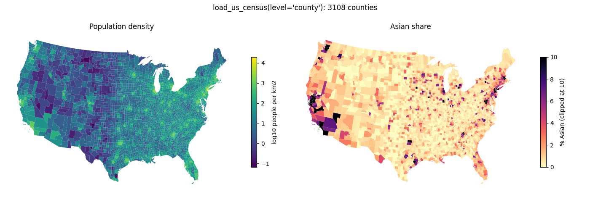

load_us_census(level="county") returns 3,108 contiguous counties from a bundled ACS 2020 snapshot (2.9 MB), with population, race and poverty columns. Black and Asian counts are zero in 95 and 258 counties, which makes them a second, harder value distribution for county flow cartograms.
contiguous_only=True (default) drops Alaska, Hawaii and Puerto Rico and keeps DC, giving 3,108.County Name, COUNTY (the county FIPS part) and State Name; Region and Division as before.simplify=2000 (the data validity tests cover all three loads).| column | minimum | median | maximum | counties with 0 |
|---|---|---|---|---|
| Population | 117 | 26,028 | 10,040,682 | 0 |
| White | 12 | 20,095 | 2,603,280 | 0 |
| Black or African American | 0 | 801 | 1,184,373 | 95 |
| Asian | 0 | 151 | 1,467,279 | 258 |
| Hispanic or Latino | 0 | 1,130 | 4,851,344 | 16 |
Population is a mild case (a range of five orders of magnitude). The race columns have zeros and a much heavier tail, so they test the zero-value handling of the flow cartogram, which is a separate known limitation.

Population density and the Asian share of the 3,108 contiguous counties as loaded by load_us_census(level="county", race=True).